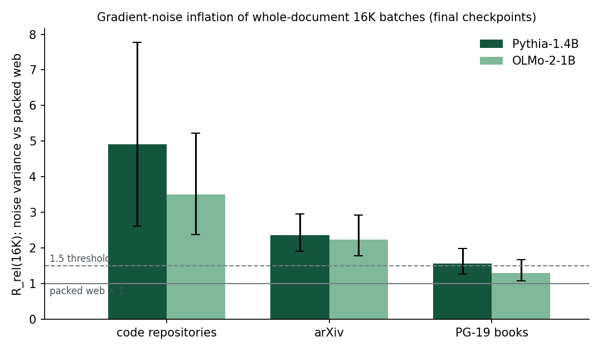

How much gradient noise do whole-document long-context batches add?
Chunks of one code repository or one paper give correlated gradients out to 16K tokens. A batch of whole-document 16K sequences of code therefore acts like 3.5–5× fewer independent samples than packed web text.
The question
Long-context training usually fills each sequence with one long document: a book, a code repository, a paper. Chunks of one document are not independent samples. If their gradients are correlated, a batch of document-contiguous sequences holds fewer independent samples than its token count suggests: a design effect in the survey-sampling sense. This project measures that effect on real gradients of open checkpoints.
Results
R(16K) is the gradient-noise variance of one document-contiguous 16K-token block divided by that of 32 independent 512-token chunks with the same tokens. It equals the ratio of McCandlish's Bsimple for contiguous and shuffled batches. Rrel divides by packed FineWeb at the same model and checkpoint. Brackets are 95% document-bootstrap intervals.
| corpus | Pythia-1.4B Rrel | OLMo-2-1B Rrel | raw R(16K) |
|---|---|---|---|
| code repositories | 4.91 [2.61, 7.78] | 3.51 [2.37, 5.23] | 6.91 / 4.73 |
| arXiv | 2.36 [1.91, 2.96] | 2.23 [1.78, 2.92] | 3.32 / 3.01 |
| PG-19 books | 1.56 [1.26, 1.98] | 1.30 [1.07, 1.67] | 2.20 / 1.75 |
| packed FineWeb (control) | 1 | 1 | 1.41 / 1.35 |

Pythia-410M shows the same ordering at 0.7%, 5%, 25% and 100% of training, so the effect is not a warm-up artifact. On code it is heavy-tailed: a few repositories carry most of it.
Method
Each 512-token chunk is run as a standalone sequence, and its full parameter gradient is count-sketched into 217 buckets per parameter group, with exact squared norms on the diagonal. Checked against exact inner products on 8,176 pairs, the sketch's cosine error has mean −0.00007 and standard deviation 0.002. Correlations and R(W) come from Gram matrices of 512 chunk gradients per cell. Everything ran on CPU.
What it does not establish
- Whether this design effect explains why long-sequence training hurts short-context quality. That needs training runs that hold documents per step fixed while changing the window; none were run.
- A pass under the original preregistration. The packed-web control was expected below 1.2 and measured 1.26–1.41, because short web documents straddle chunk boundaries; that verdict is inconclusive. The control-relative criterion above was registered as an addendum before the confirmatory data existed.
- The all-pairs estimate of the mean gradient: cross-document pairs come only from within 4-document shards for the 1B-class models, which leaves it unbiased but noisier.
The idea that tokens of one sequence give correlated gradients is not new (Everett & Qiu, arXiv 2609.04577, Appendix I, propose testing it). I found no prior measurement on real LM gradients.